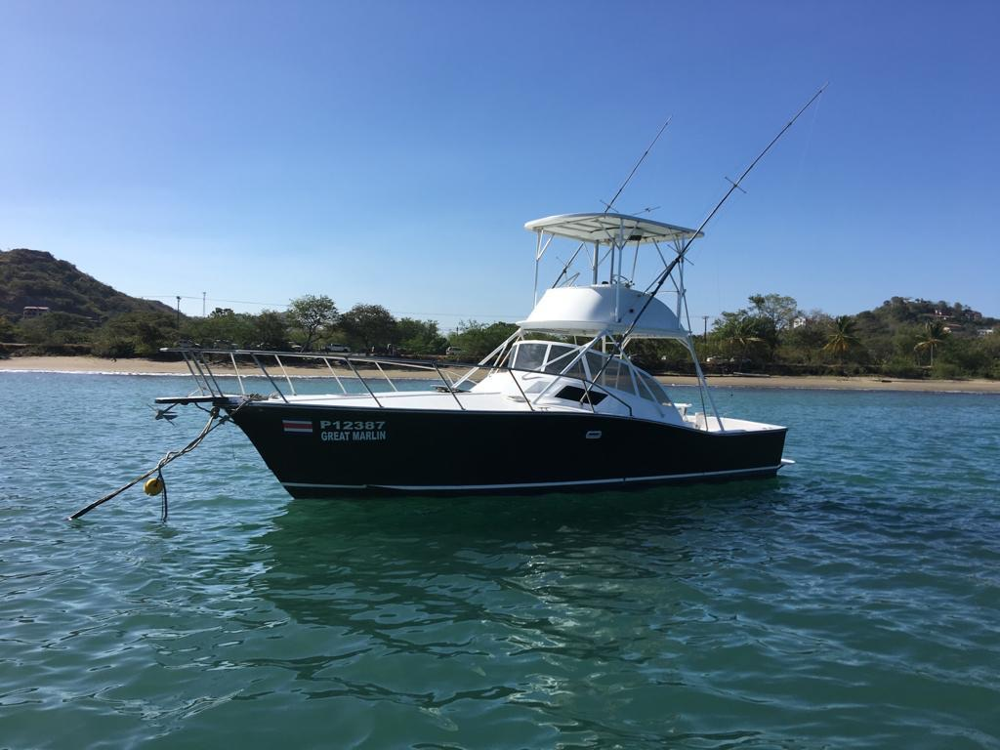

Getting to Herradura Bay
One airport, ninety minutes of road, and a horseshoe of water with a marina in it. The honest version of getting here — including the part where we tell you not to fish the day you land.
One airport. Ninety minutes of road. Then the coast, and a bay shaped like a horseshoe.
Nearly everyone lands at Juan Santamaría International — SJO, outside San José. From there to Herradura Bay is roughly a ninety-minute drive. That is the honest figure and we are going to leave it there. Anyone quoting you eighty-two minutes is quoting you a map, not a road.
Herradura is Spanish for horseshoe. That is not decoration — it is the shape of the bay, and it is the reason there is a marina sitting in it. Herradura Bay is on Costa Rica's central Pacific coast, in the canton of Garabito, Puntarenas province.
The marina is Safe Harbor Los Sueños: two hundred and one wet slips, a hundred and sixteen dry, a fuel dock. Every January, February and March it hosts the Los Sueños Triple Crown. That is the only credential this bay needs — the best sportfishing boats on earth do not tie up somewhere ordinary.
Jacó is a few minutes south down the coast, and that is where the restaurants, the nightlife and most of the lodging are. Herradura is the quiet one. Which of those two you want matters more than it sounds — that decision is further down.
Ninety minutes. That is the entire distance between a jetway and a fuel dock.
There are billfish coasts where getting to the boat is the hard part of the trip. This is not one of them.
Full disclosure before the list: one of these is our partner.
Great Marlin is partnered with Jacó Transport — a real, licensed ground transport company working the SJO to Jacó and Herradura route. The same thread that books the boat can book the car.
That is exactly why it is the easy option if you want it. It is also exactly why the list below is honest about the other two, and why you will not find a price for it anywhere on this page. Ask them directly — a transport rate copied onto a fishing site is a rate that goes stale.
Every other charter on this coast tells you to get yourself to the marina. We can actually tell you how.
- 01 Rental car Freedom · with admin A real option, and the right one if you want the rest of Costa Rica on your own schedule. The trade is the rental desk at the end of a long flight, the insurance conversation that follows it, and then a car you park before sunrise and forget until the afternoon. We are not quoting you a rate. Rates move, and we would be guessing.
- 02 Shared shuttle Cheapest · slowest The budget answer, and a legitimate one. You share a van, you run on somebody else's clock, and you stop wherever the other passengers are going. If your schedule is loose and the money matters more than the hour, take it and do not feel bad about it. No price from us here either, and for the same reason.
- 03 Private transfer Door to door · fixed Someone meets you, you get in, you get out at your lodging. Nothing to park, nothing to sign, nothing to solve at midnight in a country you landed in an hour ago. It costs more than the van. It is also what we would pick — especially if you land late, or you are due at the marina at quarter to seven the next morning.
If you are on the boat at seven the next morning, take the private transfer.
That is the recommendation, and yes — we have an interest in it. The reasoning holds even if you book it with somebody else.
Two towns, a few minutes apart, and they are not the same decision.
We are not going to name a hotel. Not because we are being coy — because the right answer depends on your budget, your crew, and whether you want to hear music at midnight. A web page cannot know that. We can — we live here, and we will tell you straight.
What we will say is the part that actually costs people money: if you are on the boat at seven, staying close is worth more than staying cheap. Both of these towns are close. Sleeping ninety minutes inland to save on a room is not a saving — it is a way to spend eighteen hundred dollars asleep in the cabin.
Herradura
- Right at the marina. The closest you can sleep to a seven o'clock departure.
- Quiet. That is the whole character of the place, and for some crews it is the entire point.
- Less choice. Fewer beds, fewer places to eat. You are trading options for proximity.
Jacó
- A few minutes south. Close enough that the drive to the dock is not a factor.
- Restaurants and nightlife. If you want dinner options and something happening afterwards, it is here.
- Most of the lodging. The widest range on this stretch of coast, by a distance.
Do not fish the day you land.
We could dress that up. We are not going to. A red-eye, then a ninety-minute drive, then a seven o'clock departure is how a person spends eighteen hundred dollars asleep in the cabin while everybody else catches fish.
Give yourself a night. One night is the difference between a day you remember and a day you have to be told about afterwards.
-
[ ARRIVAL DAY ]
Land, drive, eat, sleep
Ninety minutes from SJO and you are on the coast. Eat something, look at the water, go to bed early. This is the day that makes the next one work, and it is the first day people try to delete from the itinerary.
-
[ 06:45 · 07:00 ]
Lines away
You are at the marina at six forty-five and the lines are off at seven. Build the night before around that, not the other way round. Whatever you were planning for the evening you land, plan a smaller version of it.
-
[ 6 — 8 HOURS ]
The day itself
A full day is six to eight hours on the water, offshore, past the drop. $1,750, lunch included. The half day is $1,350 and stays inshore. Both are for the whole boat, up to six guests — each guest past six is $100, and nobody else shares your day. Custom runs and multi-day trips have no public price — ask when you book.
-
[ AFTERNOON ]
Back at the dock
You are off the boat with daylight left. Worth knowing when you lay out the week: a fishing day does not eat a whole day. The buffer night you added at the front costs you less than you think.
One more thing that only matters on a travel day. In green season — roughly May to November — the rain arrives after two in the afternoon and almost never in the morning. You read "rainy season" and picture a washed-out week. What it actually means is that you fish a clear morning and it rains while you are already back at the dock. Peak sailfish is December to April, with a second push June to August. The month-by-month version is in the fishing guide.
Next: your first day offshore-
Do I need to rent a car?
No. Plenty of guests fly in, get driven to the coast, fish, and fly home without ever holding a set of keys.
Rent one if you want the rest of Costa Rica on your own schedule — that is a real reason and a good one. Do not rent one just to reach the marina. On the day you fish, that car gets parked before sunrise and you will not think about it again until the afternoon.
-
Is the drive safe? Is it scary?
Ninety minutes of road between an international airport and a beach town, driven all day, every day, by people who are not from here. That is the honest frame.
The question underneath it is worth answering properly. It is rarely the road that gets people — it is the stack: a red-eye, a country you landed in three hours ago, a rental agreement you skim-read at a counter, and dusk arriving sooner than you expected. Take away any one of those and it is a nice drive. Take away the driving and there is nothing left to ask about.
If the question is in your head at all, that is your answer. Ride in the back.
-
What if my flight is late?
Flights slip. It is the strongest argument on this page for two things.
First, the buffer night. A flight that slides four hours is an inconvenience if you fish the day after tomorrow. It is an expensive problem if you were supposed to be at the marina at quarter to seven.
Second, the private transfer. A shared van runs on its own clock and other people's connections. A private car does not leave without you — that is the entire product.
Either way, tell us as soon as you know. WhatsApp or email — better heard at midnight than at the dock.
-
How early do I need to be at the marina?
Lines are off at seven, and you are at the marina at six forty-five — the boat leaving and you arriving are different times on purpose. Exactly where to stand comes when you book.
Do not read that number off a website. Get it when you book, then be early anyway. There are two hundred and one wet slips at Los Sueños, and in the dark they all look identical to somebody who has never seen them.
-
Can you pick me up?
Yes — and this is the one answer here we have to give carefully, because we are not neutral about it.
Great Marlin is partnered with Jacó Transport, a licensed ground transport company that runs the SJO to Jacó and Herradura route — the same booking thread, nothing changing hands behind your back. So yes: you can be met at the airport and dropped at your door.
What you will not find here is a price, a vehicle list or a booking form. That is theirs to quote, not ours to guess at from a fishing page — and a number copied across from one business to another is a number that goes stale. Ask them for it directly. The full picture of what the cars can cover — airport, dock at dawn, dinners, day runs — is on the transportation page.
And if you would rather use somebody else, use somebody else. It is ninety minutes either way, and the fish do not check how you got here.
The hard part was the flight.
Tell us your dates and where you are landing. You will get the dock time, and an honest answer on whether you need a car at all.